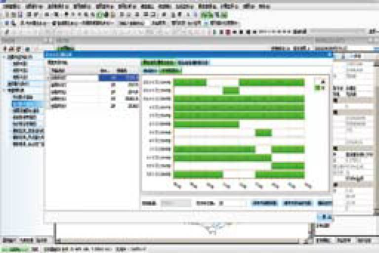
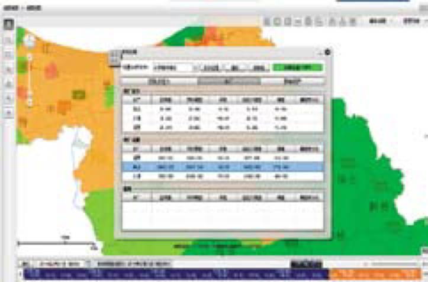
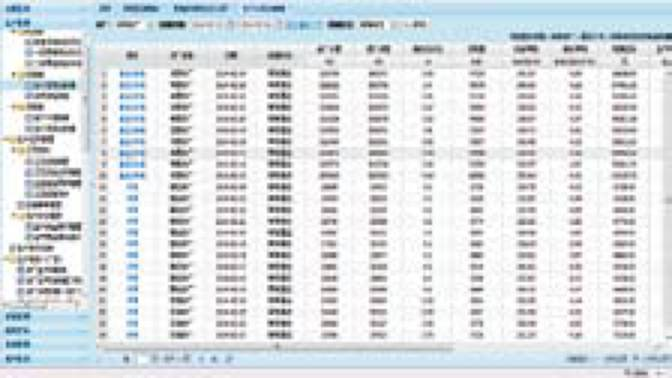
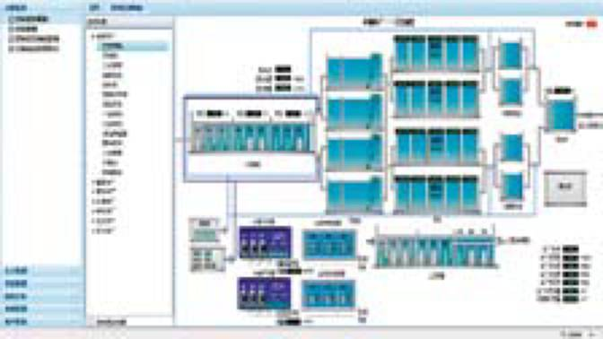
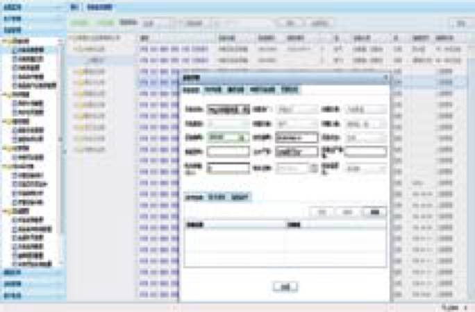
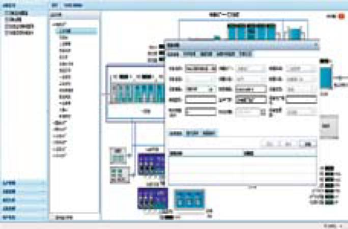
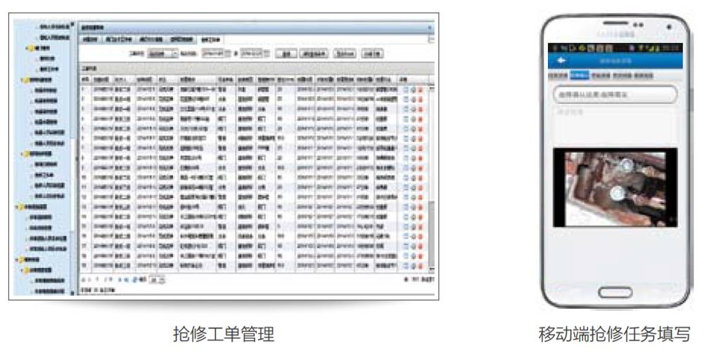

-
DigitalWater SS-GIS
供水管网地理信息（GIS）系统给水管网GIS系统借助GIS 技术、Web 技术和移动终端技术，为水务企业提供高效的管网资产信息管理工具，帮助企业快速创建、维护、分享和使用供水企业管网资产信息。
模块与功能
桌面 GIS
● 基于C/S架构，实现对管网资产的数据管理，包括导入导出、编辑、查询、统计、分析管理等功能。
WebGIS
● 基于B/S架构，提供管网资产数据的网页端发布、查询、统计、决策分析和共享等功能
移动 GIS
● 提供基于安卓和iPad端的移动端GIS应用，提供地图浏览、资产查询、人员定位、水量统计、爆管分析、火灾分析等功能
技术特点
● 完全针对给水管网资产特点量身设计和开发，支持节点、阀门、管线、消火栓、泵站、监测点等各种给水系统要素的管理，提供内置标准给水图符库
● 支持多人同时在线编辑，满足企业级需求
● 提供连通性分析、爆管关阀分析、横截面分析等在内的专业供水管网分析工具
● 全面支持移动端的查询和分析功能，包括连通性分析、爆管分析等专业分析功能

DigitalWater SS-OSIM
供水管网在线模拟分析系统采用国际领先的在线式模型系统架构，打通给水管网模型与企业数据资产之间的通道，构建企业级模型应用系统，显著提升模型的精度和实用性，同时让模型的维护和更新工作变的前所未有的简单。
模块与功能
在线模型模块
● 提供GIS数据一键导入、管网结构简化、拓扑检查、水泵参数率定、管网参数率定等模型构建功能
● 将模型与SCADA数据连接，提供在线监测设备管理、监测数据查询、实时数据查询等在线模型功能
● 实现情景管理、专题图、对比分析等模拟和结果分析功能
优化调度模块
● 提供调度指令管理、优化调度计算、水量预测、调度预案管理等功能，帮助调度人员进行科学辅助调度决策
技术特点
● 遵循大数据模式设计研发，处于国际前沿技术
● 实现与GIS系统的无缝集成
● 完全整合SCADA数据的在线模拟
● 基于在线监测数据的水量自动分配
● 系统提供在线模型一体化配置管理工具，使模型维护难度显著降低
DigitalWater SS-SDS
供水在线监测与智能调度系统系统基于生产数据中心和GIS技术，实现压力、流量、水质、水厂、泵站、二次加压泵房、管网故障、人员、警报等各种动态信息的深度整合和决策应用。系统还集成了自主研发的具有国际前沿水平的实时模型和实时调度技术，为水司构建先进的城市给水综合监控、预警、决策和指挥平台。
模块与功能
在线监测模块
● 打通管网、水厂、加压泵站等各种异构监测系统之间的壁垒，帮助企业建立整合的生产数据中心，并通过地图、组态、趋势图、警报等丰富的方式展现和应用
实时模型模块
● 通过24小时不间断的模拟运算实时对比模拟值和监测值，帮助调度人员进行警情判断，并可针对爆管、关阀、冲管等常见工况进行实时预测分析
实时调度模块
● 系统基于先进的动态水量预测和实时调度技术，实时生成当前最佳调度方案，为调度人员提供时效性强的调度决策依据，是对传统预案式科学调度模式的重大突破
技术特点
● 系统可打通企业生产型数据的壁垒，全面整合企业各种实时生产信息
● 将人员位置、实时信息、抢修工单、构筑物、用户、管网资产、爆管分析结果等空间信息整合，构建深度整合的动态信息应用平台
● 自主研发的具有国际前沿水平的实时模型和实时调度技术
● 全B/S架构系统，方便各级人员使用，易于部署和升级管理
DigitalWater SS-PMS
供水生产管理系统基于大数据分析的理念，将实时工艺运行参数、生产填报数据、生产业务数据在内的水厂生产相关的数据均纳入到管理体系中，通过对所有生产数据的综合分析及时准确的掌握实际生产运行的状况。系统还提供基于生产数据的泵能耗管理、决策分析等高级分析功能辅助生产决策。
模块与功能
实时监视模块
● 对水厂的实时生产数据进行采集，并提供Web版的水厂工艺单元监视画面，直观便捷。
数据管理与报表模块
● 提供小时、日、月、年度等多种粒度的水厂运行情况填报和报表体系，可实现从实时数据到更高粒度数据的自动转存和汇总。
能耗管理模块
● 基于水厂出水泵生产数据的泵曲线识别方法，对泵能耗进行分析管理，实现节能降耗
生产业务管理模块
● 基于水厂出水泵生产生产巡检、生产技术支持和生产安全管理等业务管理功能
决策分析模块
● 基于生产数据的高级分析功能，提供生产、能耗等多主题决策分析功能
技术特点
● 基于Web的监控画面，随时随地了解实时生产情况
● 基于大数据理念的生产数据管理体系与分析方法
● 国际领先的基于生产数据的泵率定与能耗管理，帮助企业更好的了解泵状态，指导生产调度与技术改造，节能降耗
● 生产巡检与设备维修管理的集成
DigitalWater SS-EAM
供水设备管理系统系统提供包括生产设备、构筑物、备品备件台账管理、设备养护、设备维修、设备统计分析的完整的设备管理功能，并可与供水生产管理系统的巡检异常管理以及生产设备运行时间进行关联，实现精细化的设备养护。
模块与功能
标准业务模块
● 提供设备台帐管理、养护管理、维修管理、统计分析、管理配置等功能，支持基于实时运行数据的预防性养护计划管理
组态扩展模块
● 可在组态监控画面中查看设备信息，动态显示设备故障状态，上报设备异常等（需要生产管理系统的实时监视模块）
技术特点
● 完善的设备台账信息管理、设备养护维修等信息
● 更灵活的实现设备的组合管理
● 全面的设备统计分析与评估功能
● 基于实时运行时间数据的设备养护管理
● 可与设备实时监视组态画面集成，实现更直观的设备信息查看与管理
DigitalWater SS-NET
供水管网维护管理系统基于WebGIS、移动GIS和流程引擎技术，帮助企业建立标准化的给水管网维护管理流程，使阀门管理、巡检、抢修、检漏等工作更加规范、快速和易于掌控，使决策更加科学而有针对性，从而显著提升管网资产维护和管理水平。
模块与功能
标准业务模块
● 阀门管理
● 抢修管理
● 检漏管理
● 巡查管理
扩展业务模块
● 过河管管理
● 监测点管理
● 表务管理
● 消火栓管理
● 稽查管理
● RFID扩展模块
技术特点
● 完美整合GIS技术的管网资产业务管理
● 业务功能基于流程引擎构建，灵活、高效、易维护
● 外业工作基于移动终端进行操作和记录，实现网页端计划、审批、监控和统计分析，移动端任务接收、执行和信息反馈的全过程数字化管理模式
● 移动终端支持离线地图及离线记录，可适应各种可能的现场条件
● 全面支持RFID标签技术，实现精准的资产物联网标识和管理